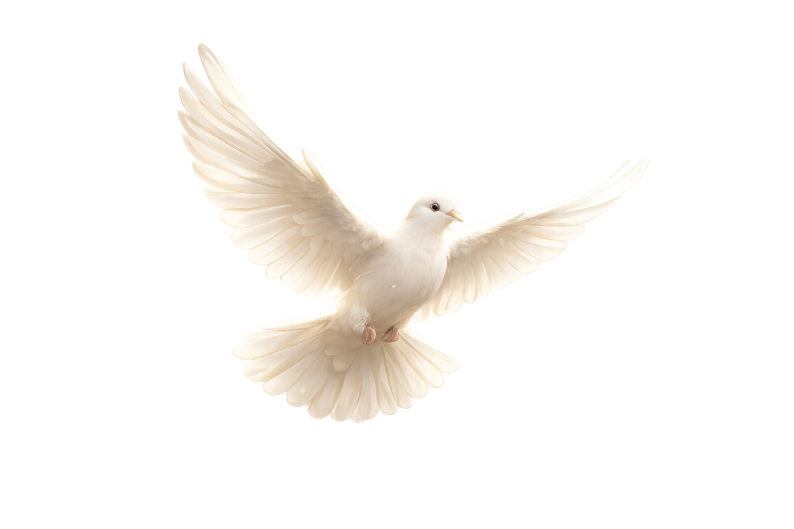
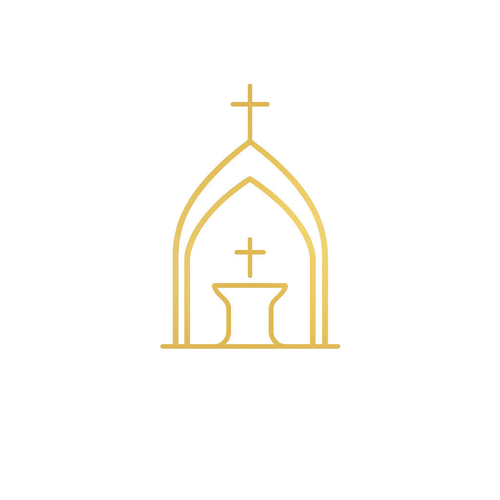
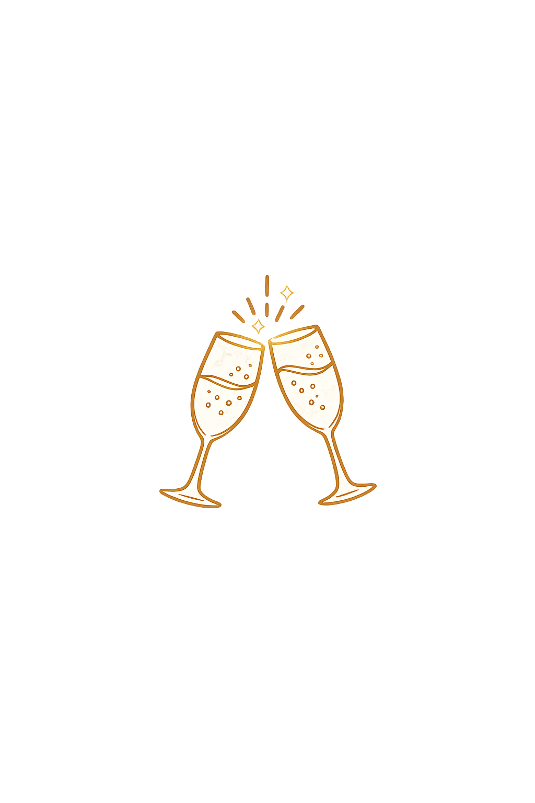
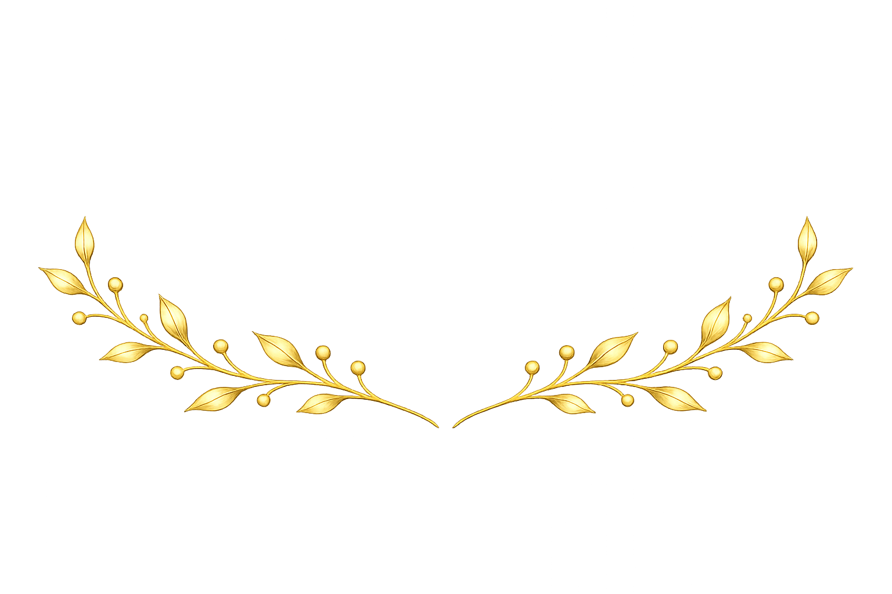

MI BAUTIZO
Jibrann
Aco Martínez
25 DE JULIO DE 2026
Con inmensa alegría en nuestros corazones, queremos compartir con ustedes un día lleno de fe, amor y bendiciones, en el que nuestro pequeño Jibrann recibirá el sacramento del bautismo, iniciando su camino de la mano de Dios.
Desliza
Un día lleno de bendiciones
“Dejen que los niños vengan a mí y no se lo impidan, porque el Reino de Dios pertenece a quienes son como ellos.”Marcos 10:14
Cuenta Regresiva
Estamos contando los días para celebrar este momento tan especial junto a ustedes.
000
Días
00
Horas
00
Minutos
00
Segundos
Mis Papás
Desde el primer instante en que llegué a sus vidas, me han rodeado de amor, cuidado y ternura. Hoy, con inmensa felicidad, me acompañan a recibir el sacramento del bautismo, dando el primer paso en mi camino de fe.
Alin Martínez Mendoza
Mis Padrinos
Hoy reciben con amor la hermosa misión de acompañarme en mi crecimiento espiritual. Su presencia, ejemplo y cariño serán un apoyo invaluable a lo largo de mi vida.
Raúl Israel Acosta García
Nadia Iveth Santos Soberanes
Celebremos Juntos
Nos llenará de alegría compartir contigo cada momento de este día tan especial.
01

Ceremonia ReligiosaPurísima Concepción
4:00 PM
Ver ubicación
02

RecepciónQuinta del Sol
5:00 PM
Ver ubicaciónGracias por acompañarnos
Su presencia será el regalo más valioso para nuestra familia.
Gracias por acompañarnos en este día tan especial y por compartir con nosotros la alegría de ver a Jibrann recibir la bendición de Dios.
¡Los esperamos con mucho cariño!
